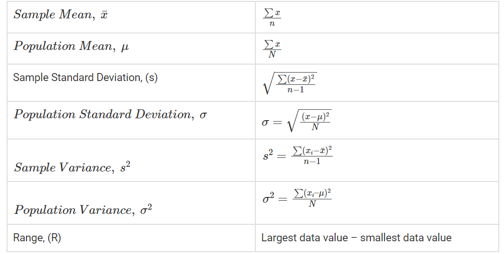

Statistics Discipline is a great sector of data analysis and reasearch.Here Statistician collect data and analysis and predict it.
Statistics is the study of the collection, analysis, interpretation, presentation, and organization of data. In other words, it is a mathematical discipline to collect, summarize data. Also, we can say that statistics is a branch of applied mathematics.
Statistics is simply defined as the study and manipulation of data. As we have already discussed in the introduction that statistics deals with the analysis and computation of numerical data. Let us see more definitions of statistics given by different authors here.
According to Merriam-Webster dictionary, statistics is defined as “classified facts representing the conditions of a people in a state – especially the facts that can be stated in numbers or any other tabular or classified arrangement”.
According to statistician Sir Arthur Lyon Bowley, statistics is defined as “Numerical statements of facts in any department of inquiry placed in relation to each other”.
To find the mean of the marks obtained by each student in the class whose strength is 50. The average value here is the statistics of the marks obtained. Suppose you need to find how many members are employed in a city. Since the city is populated with 15 lakh people, hence we will take a survey here for 1000 people (sample). Based on that, we will create the data, which is the statistic.
The basics of statistics include the measure of central tendency and the measure of dispersion. The central tendencies are mean, median and mode and dispersions comprise variance and standard deviation.
Mean is the average of the observations. Median is the central value when observations are arranged in order. The mode determines the most frequent observations in a data set.
Variation is the measure of spread out of the collection of data. Standard deviation is the measure of the dispersion of data from the mean. The square of standard deviation is equal to the variance.
Mathematical statistics is the application of Mathematics to Statistics, which was initially conceived as the science of the state — the collection and analysis of facts about a country: its economy, and, military, population, and so forth.
Mathematical techniques used for different analytics include mathematical analysis, linear algebra, stochastic analysis, differential equation and measure-theoretic probability theory.
In the case of descriptive statistics, the data or collection of data is described in summary. But in the case of inferential stats, it is used to explain the descriptive one. Both these types have been used on large scale.
The data is summarised and explained in descriptive statistics. The summarization is done from a population sample utilising several factors such as mean and standard deviation. Descriptive statistics is a way of organising, representing, and explaining a set of data using charts, graphs, and summary measures. Histograms, pie charts, bars, and scatter plots are common ways to summarise data and present it in tables or graphs. Descriptive statistics are just that: descriptive. They don’t need to be normalised beyond the data they collect.
We attempt to interpret the meaning of descriptive statistics using inferential statistics. We utilise inferential statistics to convey the meaning of the collected data after it has been collected, evaluated, and summarised. The probability principle is used in inferential statistics to determine if patterns found in a study sample may be extrapolated to the wider population from which the sample was drawn. Inferential statistics are used to test hypotheses and study correlations between variables, and they can also be used to predict population sizes. Inferential statistics are used to derive conclusions and inferences from samples, i.e. to create accurate generalisations.
The formulas that are commonly used in statistical analysis are given in the table below.
In Statistics, summary statistics are a part of descriptive statistics (Which is one of the types of statistics), which gives the list of information about sample data. We know that statistics deals with the presentation of data visually and quantitatively. Thus, summary statistics deals with summarizing the statistical information. Summary statistics generally deal with condensing the data in a simpler form, so that the observer can understand the information at a glance. Generally, statisticians try to describe the observations by finding:
The measure of central tendency or mean of the locations, such as arithmetic mean.
The measure of distribution shapes like skewness or kurtosis.
The measure of dispersion such as the standard mean absolute deviation.
The measure of statistical dependence such as correlation coefficient.
Statistics Discipline is a great sector of data analysis and reasearch.Here Statistician collect data and analysis and predict it.